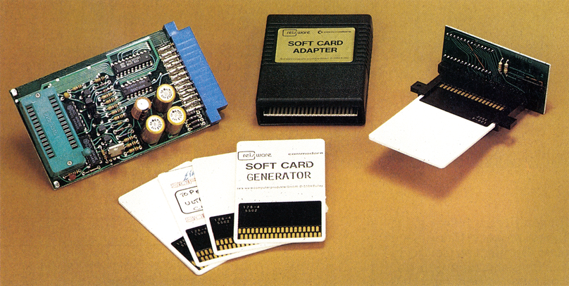

EPROMs für die Brieftasche
Was bleibt von einem EPROM übrig, wenn man Beine und IC-Körper wegdenkt? Ein flacher Chip, der genausogut in eine flache Plastikhülle paßt. Dazu noch ein geeigneter Steckadapter und fertig ist die austauschbare Softcard für den C 64.

Wer glaubt EPROMs sind ausschließlich große schwarze ICs mit vielen dünnen Beinchen, die noch dazu sehr leicht abbrechen, der hat weit gefehlt. Seit kurzem gibt es auch EPROMs im Brieftaschen-Format (54 x 85,6 x 1,8 mm, siehe Bild). Vorerst sind Softcards mit einer Speicherkapazität von 16 KByte und 32 KByte erhältlich. Softcards mit bis zu 256 KByte sind nach Angaben des Herstellers in Kürze erhältlich.
Die Softcards können wie jedes normale EPROM gebrannt werden. Dazu ist ein Programmier-Adapter erforderlich, um die Karte mit jedem handelsüblichen EPROM-Brenner programmieren zu können. Die Softcards sind kompatibel zu den EPROMS der 27xxx-Serie. Das heißt eine 16-KByte-Softcard entspricht dem EPROM 27128. Die benötigte Programmierspannung beträgt 21 Volt.
Vorerst sind 16-KByte-Softcards in zwei Versionen erhältlich: Der Typ 128-4, der uns zum Test vorlag, schaltet nach dem Einstecken den Basic-Interpreter des C 64 ab und überträgt das Programm in den RAM-Bereich. Im Computer kann dann das geladene Programm in andere Bereiche verschoben werden, so daß der Basic-Interpreter wieder aktiv werden kann. Beim Typ 128-8 wird das Programm in der Karte selbst abgearbeitet. Es benötigt also keinen Platz im Arbeitsspeicher. Diese Karte hat den Nachteil, daß nur auf maximal 8 KByte zugegriffen werden kann.
Mit dem Programm »Softcard Generator« können fast alle Basic- und Maschinen-Programme »brennfertig« vorbereitet werden. Einschränkungen müssen natürlich hinsichtlich Länge und Anzahl der Programme getroffen werden. Der Generator befindet sich selbst auf einer Softcard und ist sofort nach dem Einstecken betriebsbereit. Sollen mehrere Programme auf Softcard gebrannt werden, so muß zu Beginn ein Startmenü generiert werden. Anschließend werden die gewünschten Programme geladen und Softcard-gerecht aufbereitet. Das fertige Modulprogramm wird anschließend auf Diskette gespeichert. Dieses Modulprogramm wird nun mit einem EPROMmer, der auch 27xxx-EPROMs programmieren kann, auf Softcard gebrannt.
Zum Betreiben der Karten ist ein sogenannter Softcard-Adapter erforderlich. Dieses kleine Kästchen (siehe Bild) wird bei ausgeschaltetem Computer mit der Beschriftung nach oben in den Expansion-Port gesteckt. Am Kopfende befindet sich ein kleiner Schlitz, in den man die Softcards einstecken kann. Nach Drücken eines Reset-Tasters, oder nach dem Einschalten, stehen dann die Daten auf der Softcard sofort zur Verfügung.
Alle Angaben beziehen sich auf die Test-Version von Reis-Ware. Dieser Testsatz für Programmierer umfaßte folgende Komponenten:
- 5 Softcards (128-4). Davon eine mit Softcard-Generator
- Programmierer-Adapter für jeden handelsüblichen EPROM-Brenner
- Softcard-Adapter
- Anleitung
Der Testsatz für den C 64 kostet komplett 368 Mark. Eine 16-KByte-Karte kostet 29,80 Mark; eine 32-KByte-Softcard 39,90 Mark
Dem in der Anleitung angegebenen Vergleich der Softcards mit EPROMs der 27xxx-Serie kann leider nicht zugestimmt werden. EPROMs löscht man mit UV-Licht. Die Softcards sind jedoch nicht mit einem lichtdurchlässigen Fenster versehen und können somit auch nicht mehr gelöscht werden. Die Karten verdienen also eher einen Vergleich mit PROMs. Es stellt sich nur die Frage, wer für PROMS zwischen 30 und 40 Mark ausgeben will, da ja abzusehen ist, daß eine erstellte Softcard in absehbarer Zeit nicht mehr aktuell sein wird.
Softcards sind, im Ansatz, eine gelungene Alternative zu den handelsüblichen EPROMs. Ein verschleißfreies Ein- und Ausstecken, wird der zu schätzen wissen, der beim Wechseln von EPROMs schon so manches Bein verbogen hat. Würde sich Reis-Ware dazu entscheiden, die Softcards mit EEPROMs zu bestücken, könnte sich diese Art der Datenspeicherung vielleicht als Alternative zur Diskette herauskristallisieren.
(C. Q. Spitzner/og)Info: Reis-Ware, Postfach 36, D-5584 Bullay, Tel. 06542/2086